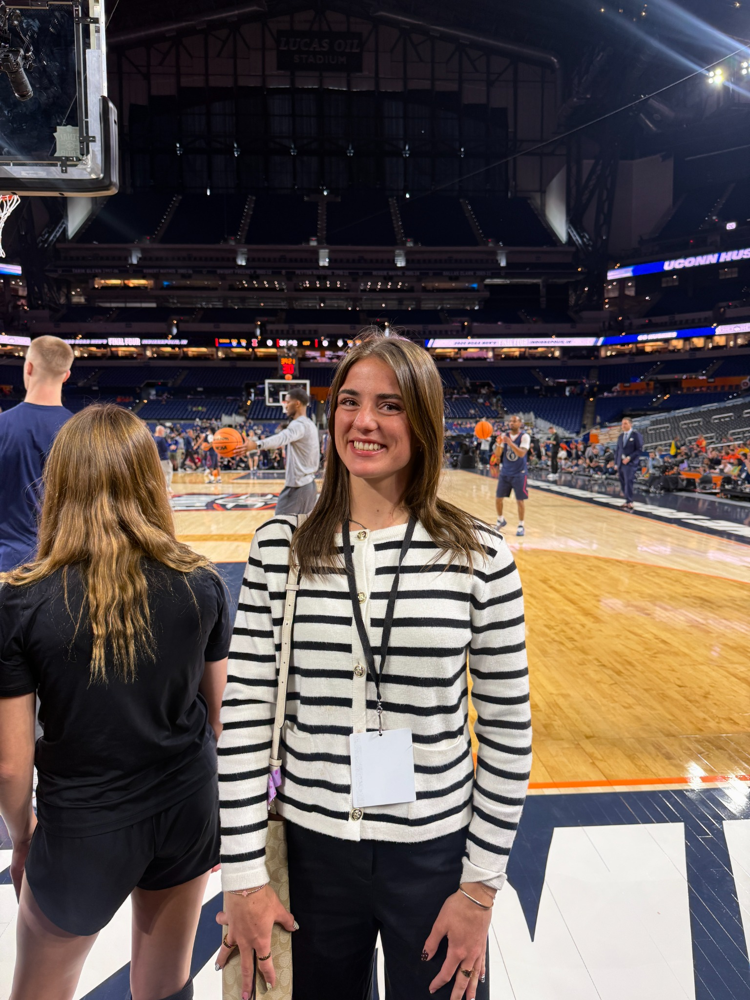
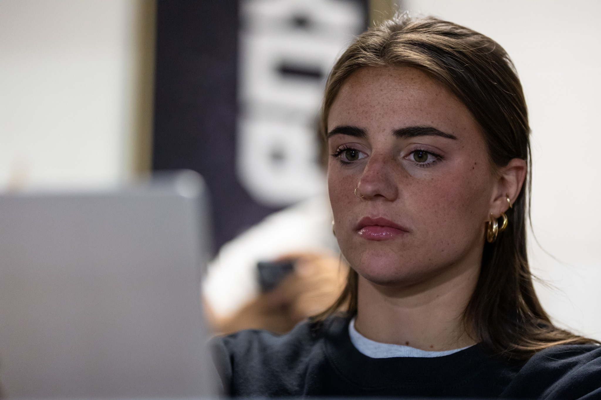

FEATURE 01 / GAME STORY
Rivets Win Big on Peaches Night with 15 Strikeouts
this was a game story i wrote during my internship with the Rockford Rivets.
Enter the reporting deskPORTFOLIO ISSUE / 01
A PORTFOLIO BY EMILY TUTTLE
A field guide to reporting, writing, and finding the story beyond the stat line.
Open the issue
JOURNALISM · REPORTING · PEOPLE · PLAY
READ THE ISSUE
Each cover opens a different reporting desk.
FEATURE 01 / GAME STORY
this was a game story i wrote during my internship with the Rockford Rivets.
Enter the reporting deskSPORTS JOURNALISM
✦STORYTELLING
✦REPORTING
✦EDITORIAL LEADERSHIP
FROM THE FIELD

I am a passionate storyteller with a desire to find creative stories and utilize my competitive edge to share beyond what is read on a stat line. I have strong verbal communication skills to engage with both those that I work alongside and have the ability to lead. My love for sports differentiates me as I display a variety of media skills that I hope to use in sports journalism.
Meet Emily